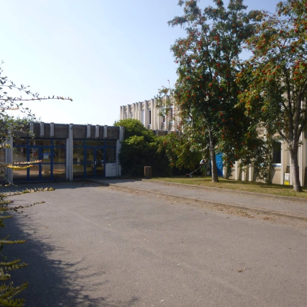
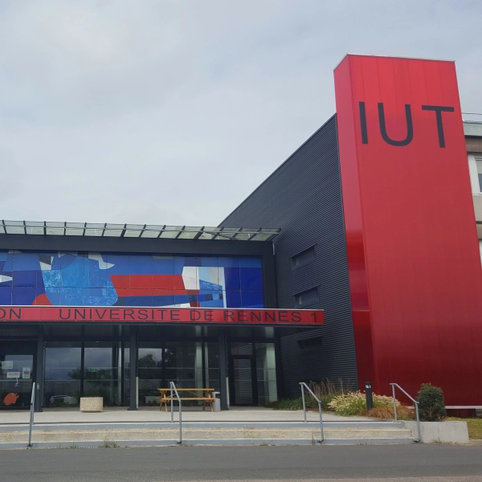
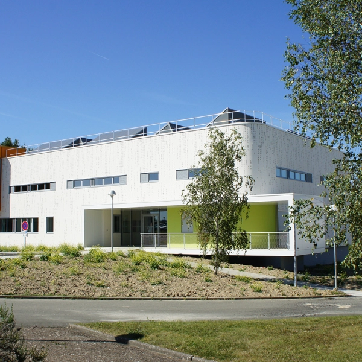
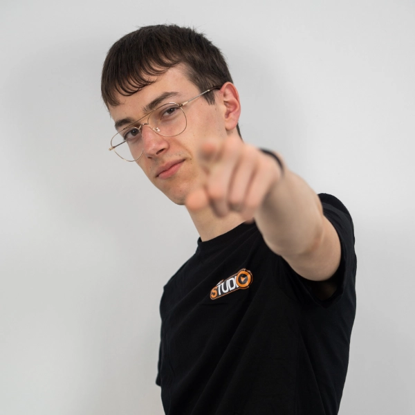
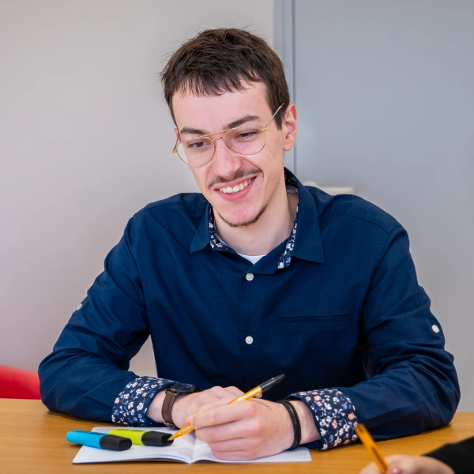

Thomas
Designer
Filmmaker
Developer
Photographer
Designer
Doudet
Chaque projet naît d'une intention.
Que ce soit une production live, une vidéo promotionnelle ou une création graphique, mon approche reste cohérente : penser l'émotion, structurer la narration, et transformer chaque idée en une expérience immersive.
Issu du BUT MMI
Vidéaste et designer graphique avec une passion pour la narration visuelle et la production audiovisuelle. Formé aux Métiers du Multimédia et de l'Internet, j'allie rigueur technique et sensibilité créative pour concevoir des projets qui marquent et inspirent.
Compétences

Lycée
Les premières images capturées avec un appareil photo emprunté. Le cadre, la lumière, l'instant — une passion qui ne demandait qu'à naître.

BUT R&T
Une année dans les réseaux et télécoms pour comprendre les infrastructures numériques. Une réorientation nécessaire vers ce qui compte vraiment.

MMI
Convergence de toutes les passions : audiovisuel, design graphique, web. Une formation qui a forgé une identité créative propre.

Le Studio
Entrée dans le monde professionnel. Production live, réalisation vidéo et coordination d'événements. La théorie devient pratique.

Alternance
Fusion des compétences web et création. Développement de stratégies digitales et production créative en conditions réelles.
- La Cérémonie des Walid
- Trailer Le Studio
- Sweat MMI — We Are Walid
- Sweat MMI — Walid's World
- Shootings Inter-BDE